Kartabend · Nutzerhandbuch
Version 31 · 19. November 2026
Vom ersten Anmelden bis zum gemeinsamen Kartabend. Die Screenshots zeigen ausschließlich Beispiel- und Testdaten; je nach Gerät kann die Darstellung leicht abweichen.
Schnellstart
- Anmelden und bei Bedarf das eigene Profil ergänzen.
- Über + einen Raum sofort eröffnen oder einen Termin als Anfrage planen.
- Mitspieler einladen, Teams speichern und Ergebnisse eintragen.
1 · Anmelden und registrieren
- Öffne die App und melde dich mit Benutzername und Passwort an. Die Groß-/Kleinschreibung des Anmeldenamens ist unerheblich.
- Über das Augensymbol kannst du das Passwort kurz anzeigen. Gib es ausschließlich in der App ein und teile es nicht mit anderen.
- Für ein neues Konto öffnest du „Registrieren“. Benutzername, Vorname, E-Mail und Passwort sind erforderlich. Das Passwort muss mindestens zwölf Zeichen haben.
- Bestätige deine E-Mail, falls die App dich dazu auffordert. Nachname, Ortschaft und Geschlecht sind für normale Kartabende freiwillig. Für Turnierzugang müssen sie ergänzt werden.
- Bei Anmeldeproblemen nutze „Passwort vergessen / bisheriges Konto übernehmen“. Prüfe auch Spamordner und die angegebene E-Mail-Adresse.
Die App richtet sich an Volljährige ab 18 Jahren. Die Oberfläche führt keine amtliche Altersprüfung durch.
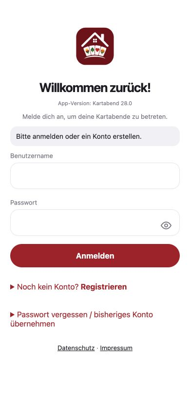
2 · Räume, Anfragen und Archiv
- Nach der Anmeldung öffnet sich die Raumübersicht. „Aktive Räume“ zeigt deine zugänglichen normalen Räume und Turniertische.
- „Anfragen“ zeigt geplante Kartabende. Die frühere Anfrage-Auswahl im Dropdown ist entfallen. Das Suchfeld hilft in allen drei Ansichten.
- Unter „Archiv“ findest du beendete Räume sowie archivierte Anfragen, an denen du beteiligt bist. Ein Raumersteller kann einen Raum wieder öffnen oder nach Bestätigung löschen.
- Ein Pfeil führt in den Raum. Das separate Sprechblasensymbol öffnet den Chat für bestätigte Teilnehmer.
- Normale Räume werden nach mehr als vier Stunden ohne Aktivität archiviert. Die Daten einschließlich einer unvollständigen Partie bleiben dabei erhalten.
Zugewiesene Turniertische stehen oben und haben einen roten Rahmen. Private Räume anderer Personen werden dadurch nicht öffentlich.
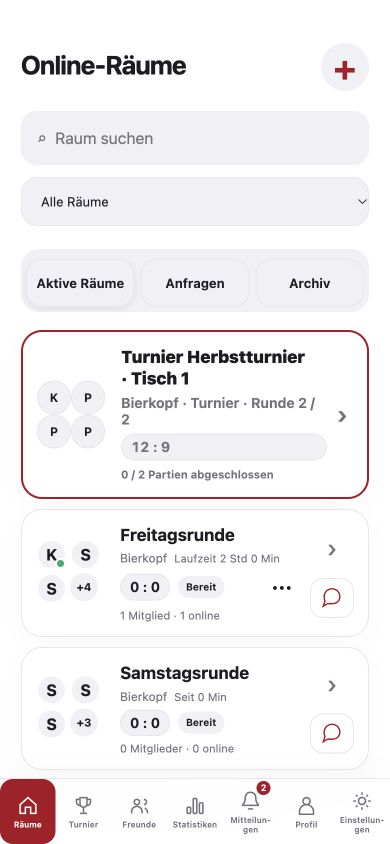
3 · Einen Kartabend planen
- Tippe in der Raumübersicht oben auf +. Wähle „Kartabendanfrage mit Termin“, um Datum, Uhrzeit und Ort festzulegen. Für sofortiges Spielen wählst du stattdessen einen Online-Raum.
- Trage einen Titel, Datum, Uhrzeit und Ort ein. Die Zeitzone steht im Formular. Eine genaue Adresse ist freiwillig; eine Karte wird erst nach ausdrücklichem Antippen geladen.
- Wähle die gewünschten Spiele. Eine reine Schleifer-Anfrage braucht sechs Zusagen, andere Anfragen vier. Der Ersteller zählt mit. Schafkopf ist derzeit nur ein Spielwunsch.
- Mit „Kartabendanfrage erstellen“ speichern. Danach wechselt die App automatisch zu „Anfragen“, wo du deinen eigenen Termin siehst.
- Nicht blockierte Freunde erhalten eine Mitteilung. Für Handy-Push gilt die separate Auswahl „Neue Kartabendanfragen von Freunden“.
Die Tabletaufnahme zeigt Datums- und Zeitfelder innerhalb ihrer Kachel. Die native Kalenderdarstellung kann je nach Gerät abweichen.

4 · Zusagen und Sichtbarkeit
- Hellblau bedeutet: Es fehlen noch bestätigte Spieler. Grün bedeutet: Die erforderliche Anzahl ist erreicht.
- Öffne eine Anfrage über den Pfeil. Interessierte angemeldete Nutzer können ihre Teilnahme anfragen; der Ersteller nimmt unter „Mitteilungen“ an oder lehnt ab.
- Der Ersteller kann zusätzliche Spieler bis insgesamt 32 erlauben. Überzählige Zusagen werden durch späteres Abschalten nicht stillschweigend entfernt.
- Unter „Einstellungen“ lässt sich die Sichtbarkeit auf Freunde beschränken. Der Ersteller sieht die eigene Anfrage immer. Vom Ersteller blockierte Nutzer sehen sie nicht. Bereits bestätigte Teilnehmer behalten ihren bisherigen Zugang.
- Der Ersteller kann vor Ablauf die Anfrage in einen normalen Raum umwandeln. Voll besetzte Anfragen öffnen ab ihrem Termin automatisch einen Raum. Nicht umgewandelte Anfragen werden vier Stunden nach Beginn archiviert.
Bis zum Ablauf der vier Stunden können fehlende Zusagen noch beantwortet werden. Die Vier-Stunden-Inaktivität normaler Räume ist eine andere Regel.
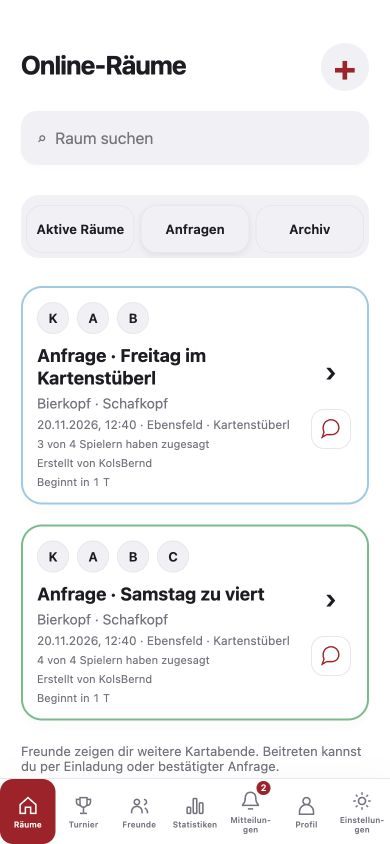
5 · Bierkopf im Online-Raum
- Unter „Spieler“ wählst du die Teilnehmer für die beiden Teams aus. Tippe auf die Profilbilder und anschließend auf „Teams speichern“. Ein Spieler kann nicht in beiden Teams stehen.
- Bei Bierkopf spielen zwei Zweierteams. Teams werden für jede Spielart getrennt gespeichert. Registrierte Nutzer lassen sich hier weder umbenennen noch mit einem anderen Profilbild versehen.
- Wähle im Spiel das gewinnende Team, „Schneider frei“, „Schneider“ oder „Durch“ und anschließend die Ansage. Prüfe die Punktvorschau vor „Runde eintragen“.
- Bierkopf endet bei 21 Punkten. Bestätige den Partieabschluss und starte über „Nächste Partie“ neu. Die Rundentabelle zeigt den Spielstandsverlauf.
- Die Kopfleiste bleibt beim Scrollen sichtbar. Bei einem versehentlichen Eintrag lässt sich die letzte Runde zurücknehmen.
Bei normalen Räumen führt „Räume“ unten zurück zur Übersicht. Ein Abbruch betrifft nur die laufende Partie; abgeschlossene Ergebnisse bleiben bestehen.
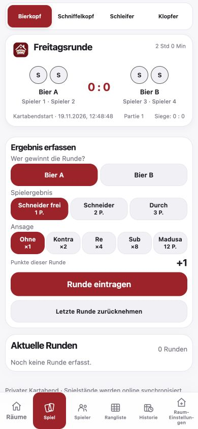
6 · Schleifer mit Dreierteams
- Wähle „Schleifer“. Unter „Spieler“ werden zwei Teams mit je drei Spielern zusammengestellt und gespeichert.
- Die Buttons 0, 1, 2, 3 ergeben zunächst 1, 2, 3, 4 Punkte. „Schneider frei“ addiert 0, „Schneider“ 1 und „Durch“ 2 Punkte.
- Der gewählte Ansagenmultiplikator bleibt wirksam. „Madusa“ wird wie in der App angezeigt als fester 12-Punkte-Wert behandelt.
- Prüfe die Vorschau und trage die Runde ein. Schleifer endet spätestens bei 31 Punkten; die letzte Wertung wird auf das Ziel begrenzt.
- Spielerlogos, aktuelle Punkte, Partie und Siege bleiben in der oberen Leiste sichtbar. Auf schmalen Geräten werden die Logos passend kleiner, ohne den Spielstand auszublenden.
Beispiel: Schleifer 2, Schneider und Kontra ergeben (3 + 1) × 2 = 8 Punkte, soweit bis 31 noch so viele Punkte fehlen.
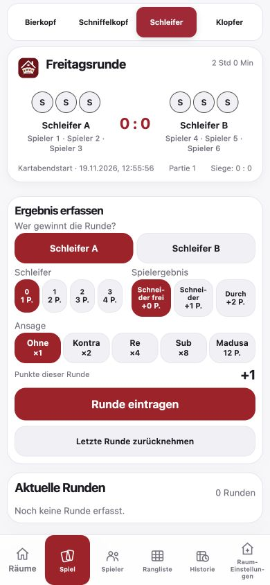
7 · Schniffelkopf erfassen
- Wähle „Schniffelkopf“ und stelle vor dem ersten Eintrag die Spielerauswahl zusammen. Während einer laufenden Partie wird die Auswahl ausgeblendet.
- Die Tabelle zeigt den Hauptspieler und die Kategorien. Bei den Solos gilt die Reihenfolge Eichel, Gras, Herz, Schellen.
- Wähle die Kategorie, trage 0 bis 120 Punkte ein und tippe auf „Punkte eintragen“. Die Punkte erhält der Hauptspieler.
- Unterhalb der Erfassung stehen die aktuellen Runden mit Spielstandsverlauf, Schreiber und Dauer. „Letzten Eintrag zurücknehmen“ korrigiert den jüngsten Eintrag.
- Wenn alle vorgesehenen Kategorien abgeschlossen sind, bestätige den Abschluss. Erst danach wird eine neue Partie begonnen.
Bei vielen Teilnehmern kann die obere Spielerleiste seitlich gescrollt werden. Eine Rundeneingabe und eine abgeschlossene Partie sind unterschiedliche Zählgrößen.
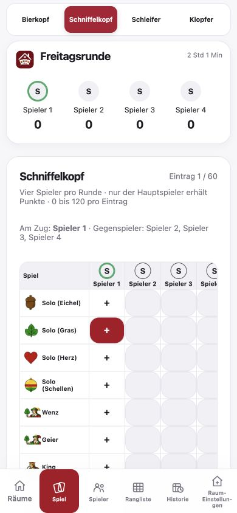
8 · Klopfer erfassen
- Wähle „Klopfer“. Vor dem ersten Eintrag kannst du die Teilnehmer festlegen; nach Partiestart ist die Auswahl nicht mehr sichtbar.
- Gib je Spieler Ansage und tatsächlich erhaltene Stiche von 0 bis 6 an. Prüfe alle Zeilen, bevor du die Runde speicherst.
- Bei richtiger Ansage gibt es 5 plus angesagte Stiche, ansonsten 0 Punkte. Die Partie endet, sobald das Ziel von 51 Punkten erreicht ist.
- Die Kreuztabelle zeigt die Runden und die Gesamtpunkte je Spieler. Für weitere Spalten kannst du sie seitlich scrollen.
- Der kompakte Verlauf unter der Erfassung nennt den Schreiber und den Gesamtstand. Die letzte Runde kann zurückgenommen werden.
In Kartabendanfragen heißt diese Spielauswahl teilweise „Klopfen“. Die Punkteerfassung in der App ist als „Klopfer“ bezeichnet.
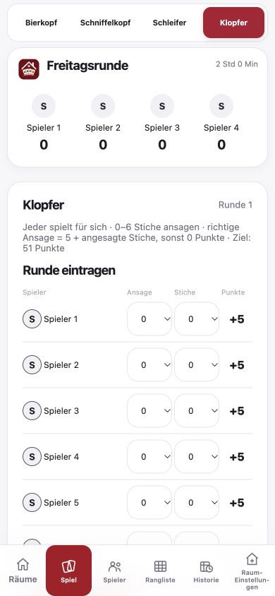
9 · Freunde, Mitteilungen und Chat
- Unter „Freunde“ findest du registrierte Nutzer und kannst eine Freundschaft anfragen. Erst nach Bestätigung ist die Verbindung hergestellt.
- „Mitteilungen“ trennt Nachrichten von Anfragen. Hier beantwortest du Freundschafts-, Raum- und Kartabendanfragen.
- Nachrichten können per Wischgeste entfernt werden. Eine Raum- oder Freundschaftsanfrage bestätigst du über die beschrifteten Aktionen.
- Im Raumchat können nur bestätigte Teilnehmer schreiben. Nachrichten sind maximal 160 Zeichen lang. Eigene Nachrichten lassen sich nach Bestätigung löschen; fremde Nachrichten kann nur ihr Schreiber löschen.
- Für Reaktionen halte eine Nachricht gedrückt. Der Chat nutzt Ende-zu-Ende-Verschlüsselung. Archivierbare Anfrage-Chats bleiben lesbar; neue Beiträge sind dort gesperrt.
Geräteschlüssel bleiben im Browser. Lösche Website-Daten nicht unüberlegt. Die Gerätefreigabe für alte Verläufe ist derzeit in der Oberfläche ausgeblendet; eine Übernahme auf ein neues Gerät lässt sich dort momentan nicht einrichten.

10 · Profil und persönliche Daten
- Im Profil siehst du deine persönliche Statistik. Es zählen die Partien, in denen dein registriertes Konto als Spieler zugeordnet war.
- Über „Profil bearbeiten“ änderst du deine Angaben und dein Profilbild. Speichere sie mit „Konto speichern“; darunter führt „Zurück“ wieder aus der Bearbeitung.
- Eine Telefonnummer ist freiwillig. Wähle die Ländervorwahl und erlaube ihre Verwendung nur, wenn du persönliche Rückfragen des Betreibers zu Kartabenden möchtest. Push benötigt keine Telefonnummer.
- Die persönliche Statistik lässt sich nach einer Sicherheitsabfrage neu zählen. Gemeinsame Raumstände werden dabei nicht gelöscht.
- Gäste ohne Konto werden nur im jeweiligen Raum gezählt. Bei ihrer Löschung werden Namen in früheren Ergebnissen anonymisiert. Registrierte persönliche Gesamtergebnisse können auch nach Raumlöschung erhalten bleiben.
Für Turnierzugang verlangt die App zusätzlich Nachname, Ortschaft und eine der Angaben Weiblich, Männlich oder Divers. Ortschaft und Geschlecht bleiben private Profilangaben.
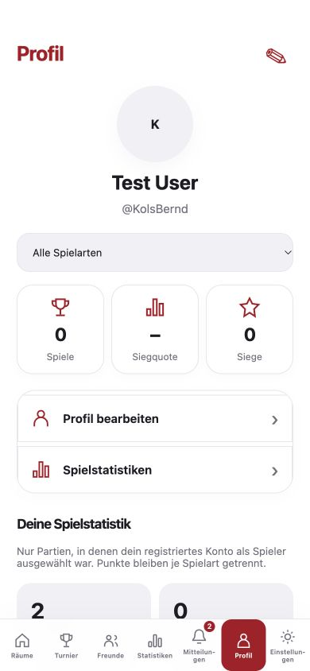
11 · Ranglisten und Raum-Einstellungen
- Die Statistik in der Raumübersicht enthält appweite Tabellen. Filtere nach Spielart und Zeitraum, um vergleichbare Ergebnisse zu sehen.
- Ranglisten innerhalb eines Raumes betreffen diesen Raum. Die Historie zeigt frühere Partien und ihre Verläufe.
- Unter „Raum-Einstellungen“ erstellst du einen Einladungslink. Wer eingeladen wird, meldet sich mit seinem eigenen Konto an und tritt dem freigegebenen Raum bei.
- „Raumstatistiken zurücksetzen“ betrifft nach Sicherheitsabfrage nur diesen Raum. Erstelleraktionen wie Import, Wiederherstellung oder Löschen sind besonders geschützt.
- Ein archivierter normaler Raum kann vom Ersteller wieder geöffnet werden. Endgültiges Löschen ist eine getrennte Aktion mit Bestätigung.
Die Werte verschiedener Spiele sind nicht unmittelbar vergleichbar. Achte beim Lesen einer Rangliste auf Spielart, Zeitraum und Anzahl der Partien.

12 · Turniere und QR-Codes
- Der Turnierbereich erscheint nur für berechtigte Nutzer. Der Ersteller richtet Bierkopf-Tische, Partien je Runde (1–30) und Runden (1–10) vor dem Start ein.
- Zugewiesene Teilnehmer können ihren Tisch bedienen. Der Ersteller kann jeden Tisch öffnen. Während der Turnierpartie lässt sich die Spielart nicht wechseln.
- Wenn alle Tische ihre vorgegebenen Partien beendet haben, startet der Ersteller die nächste Runde mit neu ausgelosten Teams oder beendet das Turnier. Nur er darf eine Partie oder das Turnier abbrechen.
- „Spielstand-QR-Code“ ist nur zum Zuschauen. Jeder mit diesem Code sieht Namen und Verlauf dieses Tisches, kann aber nichts eintragen.
- „Erfassung per QR-Code“ ist ein anderer Zugang: Der Gast gibt Vorname, Nachname und Ortschaft an und darf nur an diesem Tisch erfassen. Der Zugang endet mit Runde, Codetausch oder spätestens nach 24 Stunden.
- Unter „Bisherige Runden“ kann der Ersteller frühere Tischprotokolle öffnen. Je verlorener Partie steht beim Team ein Bierkrug.
Teile den Erfassungs-QR ausschließlich mit dem vorgesehenen Erfasser. Namen im Gast-Erfassungszugang sind selbst eingegeben, keine verifizierte Identität.
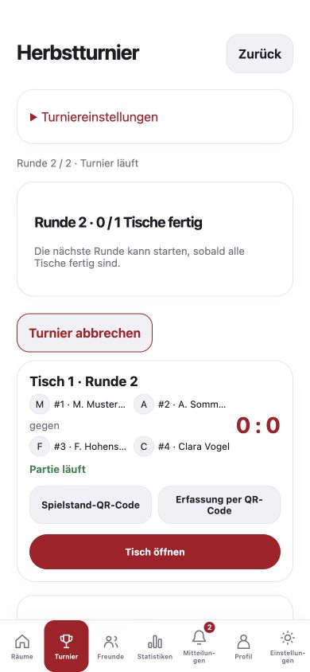
13 · Ansicht, Push und Hilfe
- Unter „Einstellungen“ wählst du die helle oder dunkle Ansicht. Hier steuerst du auch, ob deine Kartabendanfragen nur Freunde sehen dürfen.
- Handybenachrichtigungen werden hier getrennt für Freundschaftsanfragen, neue Räume von Freunden und neue Kartabendanfragen von Freunden gewählt. Mit „Auswahl speichern“ wird die Geräteauswahl übernommen. Auf dem iPhone die App zuvor zum Home-Bildschirm hinzufügen.
- Erlaube Benachrichtigungen auf dem Gerät. Sperrbildschirm, Fokusmodus und Kennzeichen werden zusätzlich in den Systemeinstellungen des Handys gesteuert.
- Weiter unten findest du das Nutzerhandbuch, Datenschutz und Über die App. Öffne das gewünschte Dokument; sein Fenster enthält den PDF-Download und einen einzigen Zurück-Button.
- Im eingeblendeten Dokumentfenster führt „Zurück zur App“ jederzeit zurück. Die PDF-Seiten enthalten zusätzlich einen Link zur App.
Bei Darstellungsproblemen zuerst vollständig neu laden. Anhaltende Fehler mit Spielart, Gerät und genauer Meldung an den Betreiber melden; niemals Passwort, geheime QR-Codes oder fremde Telefonnummern mitsenden.
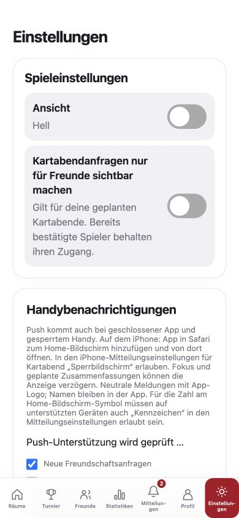
14 · Verwaltung und Rücksetzen
- Die Kachel „App-Verwaltung“ ist ausschließlich für das freigegebene Konto Kolsbernd sichtbar. Die Berechtigung wird auch auf dem Server geprüft. Die Kachel steht zwischen Datenschutz und Über die App.
- „Alle Statistiken zurücksetzen“ löscht Spielstände und Rundenverläufe aller Nutzer. Räume, Teilnehmer und Chats bleiben erhalten. Turniere werden mit ihren ersten Tischen in die Vorbereitung zurückgesetzt.
- „App vollständig zurücksetzen“ löscht Räume, Gäste, Chats, Kartabendanfragen, Turniere, Mitteilungen und Statistiken. Registrierte Konten, Profile und Freundschaften bleiben erhalten.
- Beide Aktionen verlangen zwei getrennte Ja-/Nein-Abfragen. Ein Nein in einer der Abfragen bricht ab. Nach zwei Minuten muss eine angefangene Bestätigung neu begonnen werden.
- Nach dem Reset laden angemeldete Geräte die App beim nächsten Datenabgleich neu. Anmeldungen bleiben bestehen.
Ein Reset ist endgültig. Eine Sicherung sollte vorher außerhalb der App gesichert werden. Die Installation einer neuen Version führt selbst keinen Reset aus.
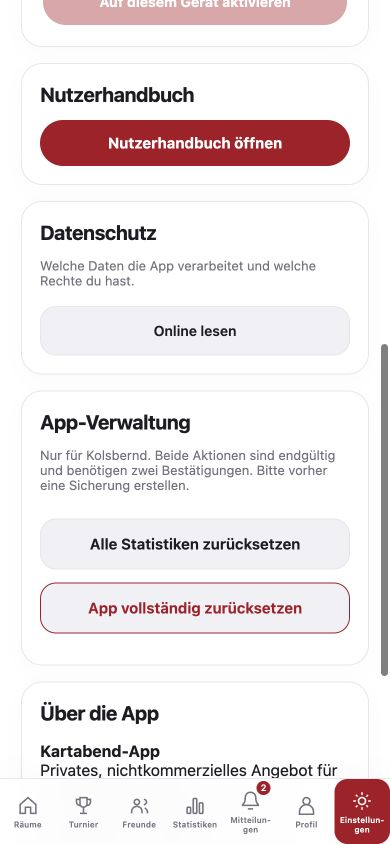
15 · Zuschauer und Beitritt per QR
- Öffne im normalen Online-Raum unten „Raum-Einstellungen“. „QR-Code zum Beitreten“ erstellt eine private Einladung für sieben Tage. Der Empfänger meldet sich mit einem eigenen Konto an.
- Der Ersteller erzeugt den Zuschauer-Code. Ohne Anmeldung sind nur Spielstände und Verläufe lesbar. Namen, Bilder und Schreiberangaben erscheinen nur bei eigener Freigabe; sonst Anonym und ohne Bild. Gäste bleiben ohne Namensfreigabe.
- Beim ersten Betreten eines Raums oder Tischs erscheint eine freiwillige Ja-/Nein-Auswahl. Nein verhindert weder Beitritt noch Mitspielen. Ergebnisse können trotz maskierter Namen in kleinen Gruppen zuordenbar sein.
- Solange der Raum geöffnet ist, bleibt derselbe Zuschauer-Code gültig. „Zuschauer-Code erneuern“ sperrt ihn nach Bestätigung sofort. Beenden sperrt ihn ebenfalls; nach Wiederöffnung wird ein neuer Code erstellt.
- Die Zuschaueransicht aktualisiert sich automatisch. Sie enthält keine Eingabefunktionen. Nach dem Entzug kann bereits Gesehenes oder ein gespeichertes Bildschirmfoto nicht zurückgerufen werden.
Zuschauer-Code und Beitritts-Code sind unterschiedliche Berechtigungen. Niemals einen Beitritts-Code öffentlich veröffentlichen, wenn nur Zuschauen beabsichtigt ist.
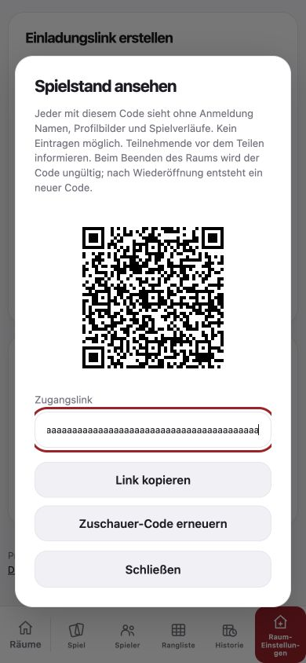
16 · Freiwillige Zuschauerfreigabe
- Lies beim ersten Betreten die Erklärung „Ergebnisse mit Namen teilen?“. Über „Datenschutz lesen“ erreichst du die vollständigen Hinweise, ohne die Entscheidung zu verlieren.
- „Ja“ erlaubt die zusätzliche Anzeige deiner Namen und Bilder gegenüber externen Zuschauern mit dem QR-Link. „Nein“ lässt dich genauso mitspielen; im öffentlichen Ergebnis steht dann Anonym ohne Profilbild.
- Deine Entscheidung wird für diesen Raum oder Tisch mit Textversion und Zeitpunkt auf dem Server gespeichert. Bereits vorhandene Einträge werden bei neuen Zuschauerabrufen nach der aktuellen Auswahl gefiltert.
- Unter „Raum-Einstellungen → Zuschauerfreigabe ändern“ kannst du erneut wählen. An Turniertischen steht die Auswahl unter Tischstatistik. Unter „Einstellungen → Zuschauerfreigaben“ lassen sich sämtliche eigenen Freigaben widerrufen, auch für frühere Räume.
- Beim Beenden und Wiederöffnen eines Raums wird erneut gefragt. Eine verweigerte Freigabe für einen Raum gilt nicht automatisch als Zustimmung an einem anderen Tisch.
Anonym ist eine Anzeige, keine Garantie vollständiger Anonymität. Andere Mitspieler können Ergebnisse eventuell zuordnen. Die Auswahl ersetzt keine Rechtsgrundlage für sämtliche App-Daten und holt keine bereits angefertigten Kopien zurück. Meldet die App eine fehlgeschlagene Speicherung, ist auch ein Widerruf noch nicht bestätigt; bitte mit Internetverbindung erneut versuchen.